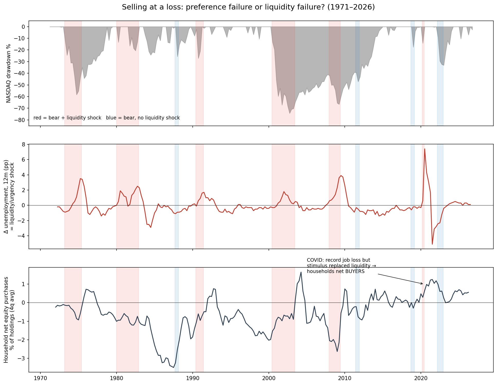
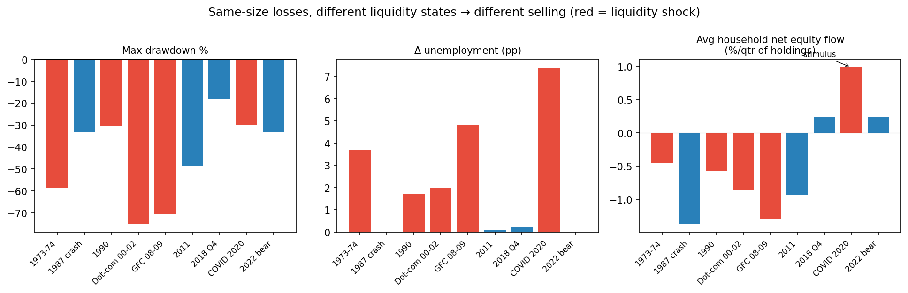
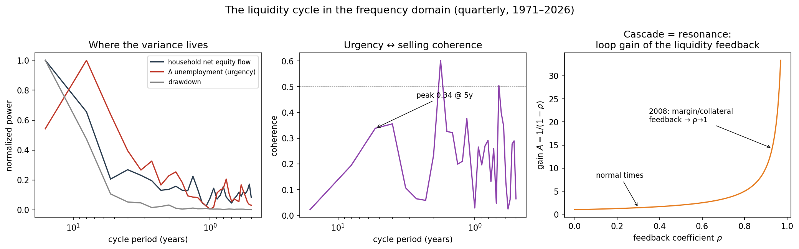

The Forced Urgency Gap
Prospect theory locates the pathology of selling in the seller's value function. This paper locates it in the seller's balance sheet. The distinction is not semantic: one diagnosis prescribes investor education, the other prescribes bridge liquidity, and only one of them moved markets when tested at scale (§5). The gap is a single missing state variable — urgency, the shadow price λ on the constraint liquidity escaped; now I need that money — and restoring it reorganizes the identification, the amplification, the distribution, and the recruitment of the losses.
§1 · The model in one paragraph
Agents with standard preferences (no kink, no reference point) hold an asset, carry a non-deferrable commitment c̄ (rent, mortgage, food) with default cost χ (eviction, foreclosure), and face an income shock with probability f. Urgency is the Lagrange multiplier λⁱ ≥ 0 on the liquidity constraint; it is strictly positive when cash + income + credit < c̄. A forced sale is a sale at λ > 0 that would not occur at λ = 0 holding beliefs and preferences fixed. Proposition 1: a constrained agent optimally sells at any positive price, including below basis and below fundamental value — the realized loss carries zero information about preferences. It is a statement about the constraint set.
§2 · Theorem 1 — Misattribution
§3 · Theorem 2 — The cascade, and the $750 seed
Market clearing with limited arbitrage gives p = μ − κS; lower prices tighten collateral, margin, and refinancing constraints, so forced supply S depends on price. With feedback coefficient ρ = κ|∂S/∂p|, losses amplify by A = 1/(1−ρ), diverging as ρ → 1, with discontinuous fire-sale equilibria beyond a threshold. The total mark-to-market loss is borne by all holders, not only the shocked fraction f.
§4 · Who collects, and how the harvested are recruited
In the fire-sale equilibrium, permanent-capital buyers — lockup vehicles, corporate balance sheets, institutional single-family-rental platforms — buy at the discount and earn it as rent for supplying liquidity-immunity. Every uninsured cycle is a wealth transfer from urgent to non-urgent balance sheets. Because that rent is increasing in system fragility (∂rent/∂ρ > 0), the harvesting side rationally opposes the cheap intervention — not from malice, but because bridge liquidity destroys the discount it harvests. Iterated, this is a concentration ratchet: each crash moves stock from constrained households to permanent capital, enlarging its absorption capacity and its stake in the next crash. The post-2008 institutional SFR wave is one realized iteration.
§5 · Macro evidence, 1971–2026
FRED and Federal Reserve Z.1 data: NASDAQ drawdowns, unemployment (urgency proxy), financial stress, retail money-market assets, and household net purchases of corporate equities as a share of holdings, quarterly.
The two decisive cells: 2022 — a one-third drawdown with slack constraints, and households bought; 2020 — the largest income shock on record, and households still bought, because CARES transfers replaced the lost liquidity (saving rate +15pp). The one cycle in which policy hit λ directly is the one cycle without capitulation. 1987, the apparent counterexample, was margin-call selling — leverage is simply another channel through which λ binds.


In the frequency domain, household-flow and drawdown variance concentrates at ~16-year periods (the credit cycle), unemployment at ~8–10 (the business cycle), with almost no power at the high frequencies where a sentiment story would live. In the cycle band, unemployment leads household selling by roughly seven quarters — a buffer-depletion lag. Agents do not sell the day liquidity escapes; they sell when the buffer runs out. A preference story has no natural account of that lag; a constraint story predicts it. The cascade restates as a transfer function: A = 1/(1−ρ) is the loop gain of a positive-feedback amplifier that magnifies low frequencies most — which is why the variance sits where it sits.

221 quarters contain roughly three realizations of a 16-year cycle; the spectrum is consistent with the theorem, not proof of it. Z.1 household flows are aggregate, buyback-distorted, and net forced sellers against dip buyers. The sharp identification remains the 2020/2022 pair.
§6 · Boundary conditions — what the literature already disproves
But note what that evidence concerns: the disposition margin — refusing to sell at a loss in normal times. It establishes the preference exists; it does not establish that crisis-wave selling is preference-driven, and the fire-sale literature points the other way on that margin. The findings compose rather than conflict: households hold losers until λ > 0 forces the sale. The preference governs the quiet regime; the constraint governs the loud one. The surviving theorem: crisis-state preference parameters are unidentified without λ, and pooled loss-aversion estimates are biased upward by its omission — coexistence with a bias term, not replacement.
§7 · What is missing from the literature
7.1 Genesove–Mayer in a crash
The benchmark identifies preferences in a regional, slow bust, on the listing margin. No study runs the same design inside a systemic capitulation window: a crisis-state decomposition of realized sales into contractual (stops, margin, redemptions), cash-need (λ > 0), and voluntary components, with the liquidity state observed. Scandinavian registry data — linked bank balances, unemployment-insurance records, security-level holdings — makes this feasible now; state-level UI generosity against 2008–09 U.S. brokerage records is the available quasi-experiment. This is the paper Theorem 1 says must exist, and it does not.
7.2 The contract share of forced supply
No unified measurement exists of what fraction of crisis volume is contractually forced — triggered stops, margin liquidations, redemption-driven fund sales (the Coval–Stafford channel) — versus discretionary. Broker order-type flags, FINRA margin statistics, and fund flows each capture a piece; nobody has assembled the decomposition Proposition 2 requires. Without it, ρ is not measurable ex ante, and neither is the distance to the cascade threshold.
7.3 The merged model
The behavioral literature estimates preferences without λ; the fire-sale literature models λ without preferences. A structural model in which reference-dependent agents choose the contracts that later force them — loss aversion as demand for stop-losses, stop-losses as supply of cascades — does not exist. Its comparative static is testable: markets with heavier retail stop-loss and margin penetration should exhibit larger A for identical fundamental shocks.
7.4 Past Piketty — a mechanism for r > g
7.5 The welfare accounting of the seed
No cost-benefit analysis treats eviction and foreclosure prevention as macro-stabilization rather than welfare policy. The object to be estimated is A itself: cascade losses prevented per dollar of bridge liquidity, inclusive of spillovers. The calibration above suggests order 10²; a defensible estimate would re-rank housing-stability spending against conventional stabilization tools.
§8 · Falsification
What would falsify the constraint channel: crisis-window micro data in which observed cash buffers, income shocks, and margin positions absorb none of the selling variance; or a liquidity instrument with zero effect on crisis selling. 2020 ran the reverse test and the channel passed. What would falsify the preference channel: Genesove–Mayer-style controls eliminating loss-aversion effects — already run, and the preference passed. Both channels are real; the open question is the decomposition, and §7.1–7.2 name the data that would settle it.
Empirical constants are pre-2025 literature ballparks flagged for verification before formal citation. References to be formalized: Kahneman–Tversky 1979; Shleifer–Vishny 1992; Odean 1998; Weber–Camerer 1998; Genesove–Mayer 2001; Kőszegi–Rabin 2006; Frazzini 2006; Coval–Stafford 2007; Brunnermeier–Pedersen 2009; Campbell–Giglio–Pathak 2011; Ben-David–Hirshleifer 2012; Desmond 2016; Piketty 2014. Data: FRED, Federal Reserve Z.1. Nothing herein is investment or legal advice.